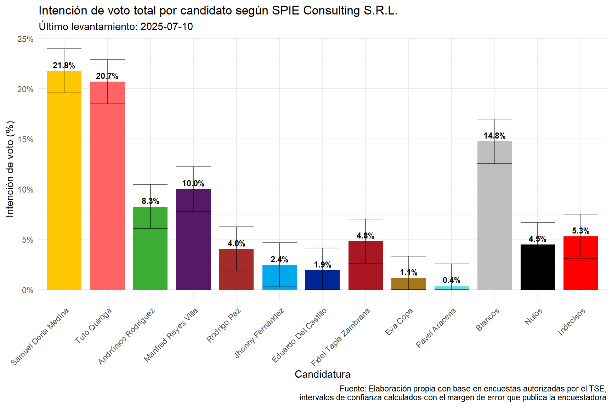
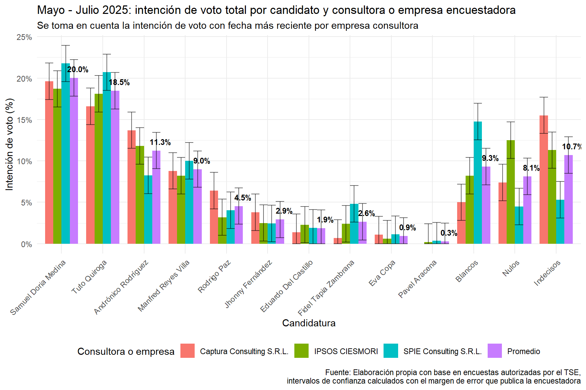
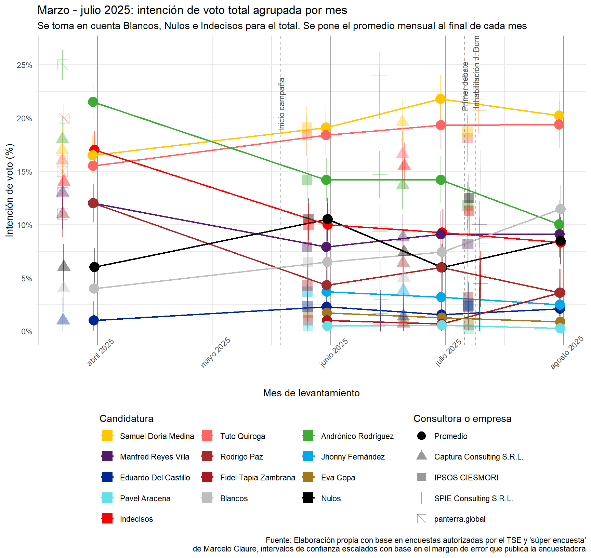
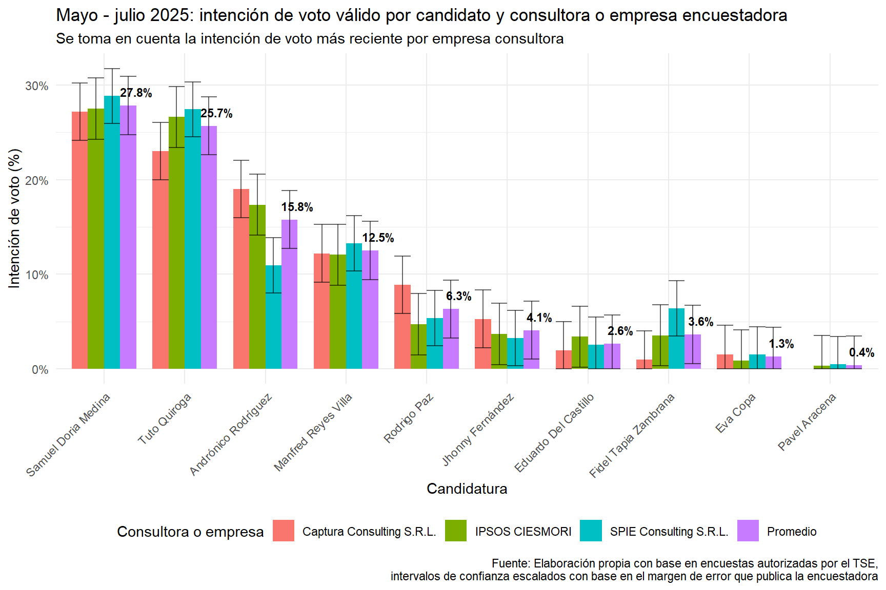
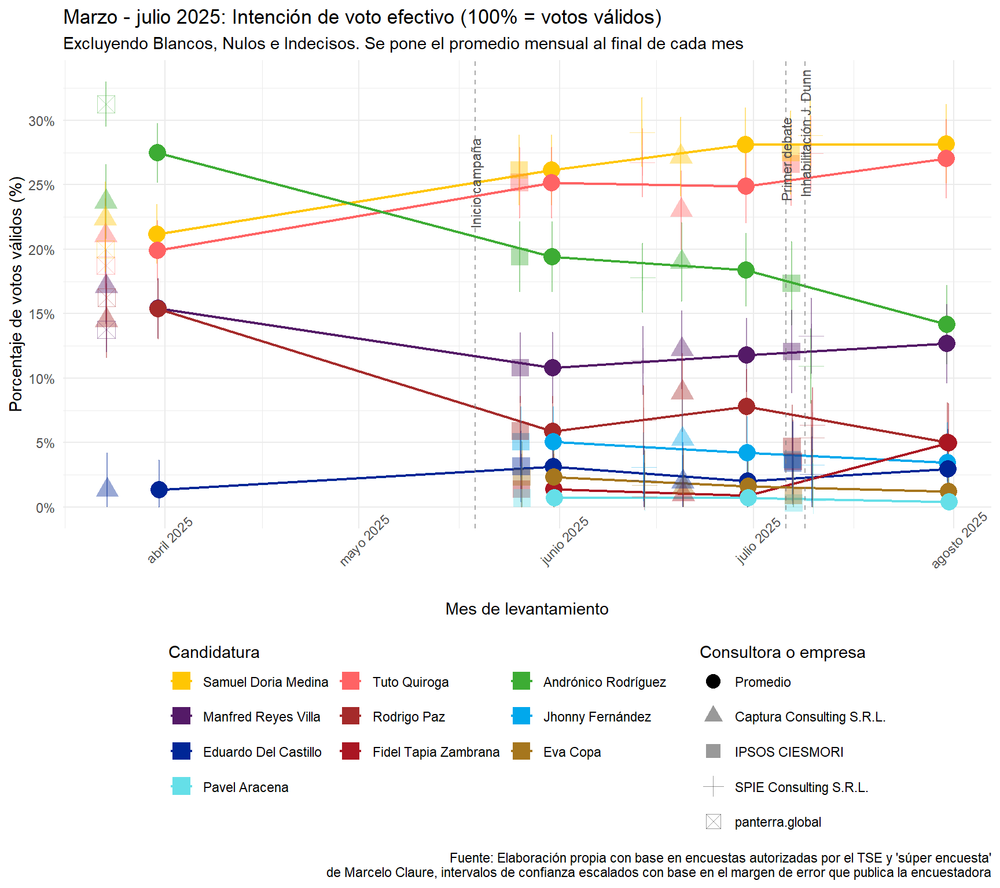
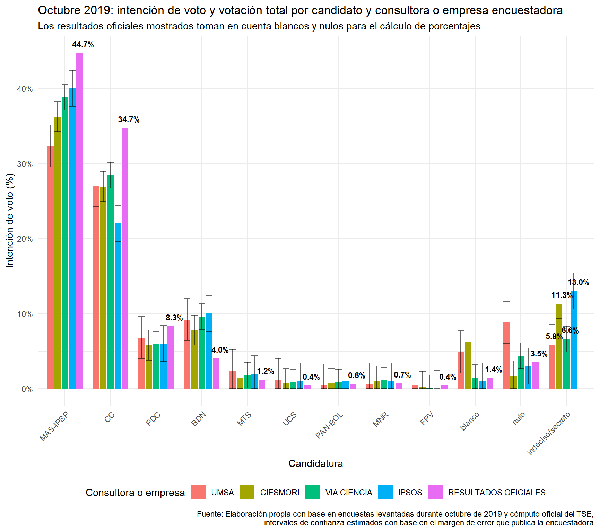
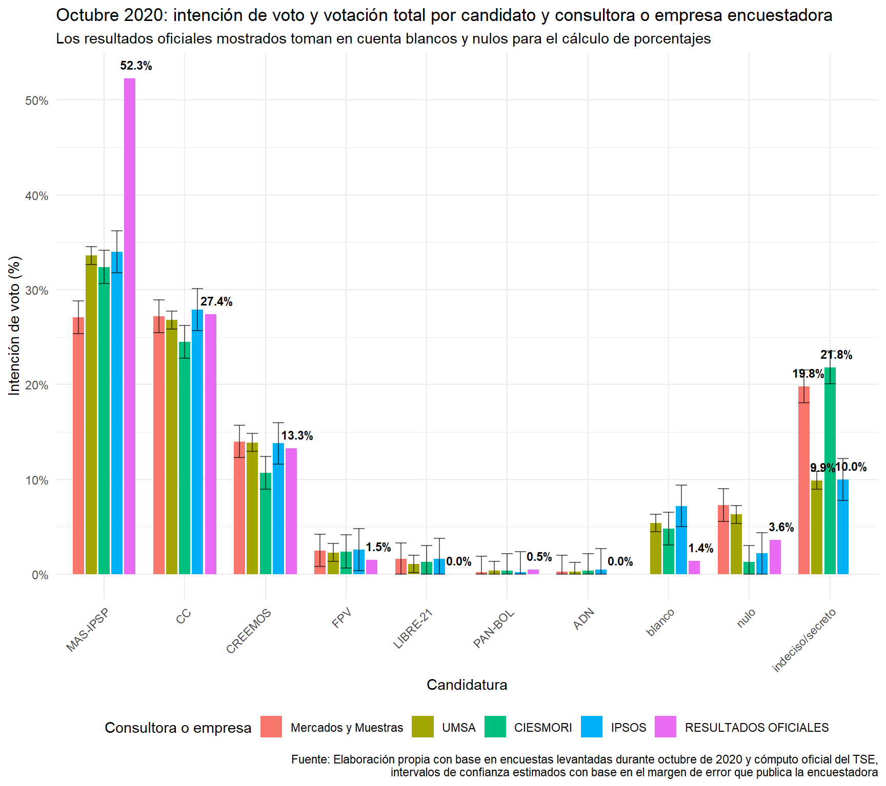

Encuesta de encuestas: Elecciones Generales Bolivia 2025
Última actualización: 17 de julio de 2025
Análisis y visualización de encuestas electorales para las Elecciones Generales (Presidencia, Vicepresidencia, Senadurías y Diputaciones) de Bolivia 2025. Explora los datos electorales más recientes, su evolución y algunas posibles explicaciones a los cambios en la intención de voto.
Registro de cambios
17/07/2025: Se agrega la tabla resumen general de encuestas, se renombra la primera sección a “, se re-escribe la descripción de tendencias en función de las últimas dos encuestas.
16/07/2025: Se añaden tres nuevas secciones: una sobre el voto oculto histórico y la precisión histórica de las encuestadoras tomando como referencia las elecciones de 2019 y 2020; otra sobre prospectiva del voto oculto en estas elecciones; y una de agradecimientos. Se añaden los datos de la última encuesta de SPIE publicada por El Deber el día de hoy, queda pendiente la reinterpretación a la luz de los últimos datos. Modificaciones estéticas menores. ¡Felicidades La Paz! :)
14/07/2025: Se introducen algunas ideas a la luz de los datos arrojados por la última encuesta de IPSOS CIESMORI. Se actualiza la presentación.
13/07/2025: Se añaden los datos de la última encuesta de IPSOS CIESMORI publicada por UNITEL el 13 de julio de 2025. Se optimiza el código para mostrar los promedios de campaña en función de la encuesta más reciente de cada consultora o empresa encuestadora (i.e. IPSOS CIESMORI es la única empresa que cuenta con dos encuestas durante el periodo de campaña, el cálculo de los promedio se hace con la intención de voto de su encuesta publicada hoy, es decir, el más reciente). Se añade nueva sección con los valores de intención de voto de la encuesta más reciente. Dado que NGP se ha retirado de la carrera electoral sus valores quedarán como perdidos de ahora en adelante. Se añaden rectas verticales marcando algunos hitos como el inicio de campaña, el primer debate y la inhabilitación de Jaime Dunn.
02/07/2025: Ante la inhabilitación de Jaime Dunn se cambia la etiqueta de candidato de NGP a Fidel Tapia Zambrana. La salida de Antonio Saravia también deja como el único candidato visible a Pavel Aracena por LyP-ADN. Modificaciones estéticas en gráficas de intención de voto para que den cuenta de la fecha del fin del levantamiento de las encuestas, se agrupó mayo y junio para gráficas de intención voto desde el inicio de campaña.
01/07/2025: Añadidas etiqueta de datos sobre barras promedio en gráficas de intención voto total e intención voto válido.
30/06/2025: Se añade información de la segunda encuesta de Captura Consulting publicada por Red Uno y RTP publicada en esta fecha. También se agrega la primera encuesta de la misma consultora, que corresponde al periodo de fines de marzo. Se introducen algunas modificaciones menores al análisis e interpretación en función de la nueva información. Optimizaciones, cambios estéticos menores en gráficas y correción ortográfica y de estilo del texto.
27/06/2025: Primera publicación con las encuestas de junio (UNITEL y El Deber) y encuesta de Marcelo Claure de fines de marzo como punto de referencia.
Presentación
Este es un ejercicio de análisis electoral y visualización de datos inspirado en el trabajo de Político.mx, la idea es recopilar en una base de datos públicas las encuestas oficiales (y tal vez las no oficiales) para compararlas en el tiempo. La base de datos se encuentra en este archivo de sheets y el diccionario de datos en este otro
Si quieres saber quién soy yo, puedes consultar mi linkedIn aquí.
Se ha buscado cubrir la mayor cantidad de información disponible y que sea mínimamente comparable. En este sentido, se han incluido dos encuestas no “oficiales”, es decir, que no se encontraban autorizadas ni fueron fiscalizadas por el Tribunal Supremo Electoral TSE al momento de su realización -pues todavía no había necesidad de ello, según los tiempos electorales marcados por el calendario electoral del TSE. Me refiero a la “súper encuesta” de Marcelo Claure y la consultora “panterra.global” y a la primera encuesta que realizó Captura Consulting para Red UNO y RTP. Ambas operaciones estadísticas corresponden al periodo de marzo del presente año y no reflejaban exactamente los mismos candidatos pero sí casi todas las fuerzas políticas (i.e. el contendiente del MAS era Lucho Arce y el de PDC era Chi Hyun Chung y no Rodrigo Paz); de todas maneras, los tres candidatos que ocupaban los tres primeros lugares sí con comparables.
Si bien hay sondeos de opinión todavía más antiguos, partir de tres meses atrás parece ser un buen punto de referencia para observar y explicar algunos cambios recientes en las tendencias. Sin embargo, espero que las encuestas a publicarse en el futuro puedan brindar una base sólida para emprender análisis con mayor potencia estadística y mayor complejidad en la reflexión.
Las tareas pendientes identificadas son:
Análisis del comportamiento del voto oculto/indecisos. (HECHO)
Análisis histórico de la precisión de las encuestadoras en elecciones pasadas. (HECHO)
Análisis histórico del voto rural y su subestimación en las encuestas.
Breve revisión del padrón electoral.
Intención de voto Bolivia: Última encuesta disponible y cuadro resumen general
Fecha de publicación: 16 de julio
Consultora o empresa encuestadora: SPIE Consulting S.R.L.
Medio de publicación: El Deber
El siguiente cuadro recoge todas las encuestas, el promedio de votación se calcula desde el inicio oficial de campaña y con el último dato disponible de cada empresa o consultora, es decir, en el caso de SPIE Consulting e IPSOS CIESMORI, dado que ambas tienen dos estudios a la fecha, se usa solamente el dato con el levantamiento más reciente.
| Marzo - julio 2025: cuadro resumen encuestas de intención de voto | ||||||||
| Los promedios se calculan desde el inicio de campaña (19-05-2025) en adelante y con el dato de la encuesta más reciente de cada consultora | ||||||||
| 1 . Captura Consulting S.R.L. | 2 . panterra.global | 3 . SPIE Consulting S.R.L. | 4 . IPSOS CIESMORI | 5 . Captura Consulting S.R.L. | 6 . IPSOS CIESMORI | 7 . SPIE Consulting S.R.L. | Promedio campaña | |
|---|---|---|---|---|---|---|---|---|
| Fecha levantamiento | 23/03/2025 | 23/03/2025 | 14/06/2025 | 26/05/2025 | 20/06/2025 | 07/07/2025 | 10/07/2025 | -- |
| Samuel Doria Medina | 17.0% | 16.0% | 24.0% | 19.1% | 19.6% | 18.7% | 21.8% | 20.0% |
| Tuto Quiroga | 16.0% | 15.0% | 22.1% | 18.4% | 16.6% | 18.1% | 20.7% | 18.5% |
| Andrónico Rodríguez | 18.0% | 25.0% | 14.7% | 14.2% | 13.7% | 11.8% | 8.3% | 11.3% |
| Manfred Reyes Villa | 13.0% | 11.0% | 9.4% | 7.9% | 8.8% | 8.2% | 10.0% | 9.0% |
| Rodrigo Paz | 11.0% | 13.0% | 5.6% | 4.3% | 6.4% | 3.2% | 4.0% | 4.5% |
| Jhonny Fernández | -- | -- | 2.6% | 3.7% | 3.8% | 2.5% | 2.4% | 2.9% |
| Fidel Tapia Zambrana | -- | -- | 0.6% | 1.0% | 0.7% | 2.4% | 4.8% | 2.6% |
| Eduardo Del Castillo | 1.0% | -- | 1.7% | 2.3% | 1.4% | 2.3% | 1.9% | 1.9% |
| Eva Copa | -- | -- | 1.4% | 1.7% | 1.1% | 0.6% | 1.1% | 0.9% |
| Pavel Aracena | -- | -- | 0.6% | 0.5% | -- | 0.2% | 0.4% | 0.3% |
| Indecisos | 14.0% | 20.0% | 3.0% | 10.0% | 15.5% | 11.3% | 5.3% | 10.7% |
| Blancos | 4.0% | -- | 9.8% | 6.5% | 5.0% | 8.2% | 14.8% | 9.3% |
| Nulos | 6.0% | -- | 4.5% | 10.5% | 7.4% | 12.5% | 4.5% | 8.1% |
Gráficos de intención de voto total
La intención de voto total toma en cuenta a los votos blancos, nulos e indecisos, estos tres representan ahora mismo entre 17 y 28 puntos porcentuales. Para referencia, en la elección de 2020 los blancos y nulos alcanzaron apenas 5% de los votos emitidos, en el proceso electoral de 2019 su proporción fue similar, mientras que en las elecciones generales de 2014 estuvieron cerca del 5.8%.

Los últimos datos de las encuestadoras muestran un escenario electoral marcado por la volatilidad y altos niveles de indecisión. A tres meses de las elecciones, estos son los hallazgos principales:
- Competencia cerrada en la punta Samuel Doria Medina (UNIDAD) mantiene una ligera ventaja con un promedio del 20.0% en las encuestas de campaña, seguido de cerca por Tuto Quiroga (LIBRE) con 18.5%. Sin embargo, la última encuesta de SPIE Consulting (10/07) muestra que esta diferencia se ha reducido a apenas 1.1 puntos (21.8% vs 20.7%), dentro del margen de error estadístico.
Las variaciones entre encuestadoras son significativas:
SPIE Consulting otorga a Samuel 24.0% en junio y 21.8% en julio
IPSOS CIESMORI lo ubica en 19.1% (mayo) y 18.7% (julio)
Captura Consulting lo sitúa en 19.6% (junio)Caída acelerada de Andrónico Rodríguez El candidato de Alianza Popular ha experimentado un descenso constante:
De 25.0% en marzo (panterra.global) a 8.3% en julio (SPIE)
Promedio durante campaña: 11.3% Su ausencia en el debate presidencial y la división del voto masista parecen factores clave en este retroceso.
Alto porcentaje de votos no definidos La suma de blancos, nulos e indecisos alcanza en promedio:
28.1% (10.7% + 9.3% + 8.1%) Esta cifra supera ampliamente el 5% histórico y muestra un electorado significativamente descontento o indeciso.
Otras candidaturas
Manfred Reyes Villa se mantiene estable alrededor del 9.0%
Eduardo del Castillo (MAS-IPSP) no logra despegar (1.9%)
Las demás candidaturas no superan individualmente el 5%
Factores a considerar:
Discrepancias metodológicas: Las diferencias entre encuestadoras (ej: SPIE vs IPSOS) sugieren cautela al interpretar los datos
Voto rural: Las limitaciones en cobertura de áreas dispersas podrían afectar la precisión
Eventos recientes: El debate presidencial y las inhabilitaciones aún no reflejan todo su impactoProyección actual: Si las elecciones fueran hoy, lo más probable sería una segunda vuelta entre Samuel Doria Medina y Tuto Quiroga. Sin embargo, el alto porcentaje de votos no definidos (28.1%) mantiene abierta la posibilidad de cambios significativos en las preferencias.
Nota: Este análisis se basa en las encuestas más recientes de cada consultora, considerando sus respectivos márgenes de error y períodos de levantamiento.
El voto oculto / no declarado y los indecisos en la campaña 2025
Las mayores variaciones entre las encuestas se concentran precisamente en los votos blancos, nulos e indecisos, lo que refleja la volatilidad de este segmento. Para estimar el porcentaje de electores indecisos que emitirán un voto válido, podemos realizar el siguiente cálculo:
Promedio de indecisos en encuestas recientes:
\[ \text{Promedio}_{\text{indecisos, blancos y nulos}} = \frac{25\%\,(\text{SPIE}) + 33\%\,(\text{IPSOS}) + 28\%\,(\text{Captura})}{3} = 28.5\% \]Ajuste por votos nulos/blancos históricos:
Asumiendo que, en etapas finales, alrededor del 5% de los votos serán nulos o blancos (basado en tendencias históricas), el porcentaje estimado de electores indecisos con voto válido sería:
\[ \text{Indecisos}_{\text{válidos}} = \text{Promedio}_{\text{indecisos, blancos y nulos}} - 5\% = \mathbf{23.5\%} \]
Por lo tanto, aproximadamente 23.5% del electorado emitirá un voto válido pero aún no se ha definido por ninguna candidatura. En un contexto de crisis, es probable que esta decisión se retrase hasta el último momento, a menos que un evento catalizador permita a los votantes inclinarse por una opción o descartar alternativas.
Cabe destacar que los hallazgos de todas las encuestadoras muestran cierto grado de consistencia. Todas coinciden en las candidaturas que ocupan el primero, segundo y tercer lugar. Eso sí, las mayores diferencias estadísticamente significativas, es decir, tomando en cuenta los márgenes de error, se dan en la separación porcentual entre los candidatos, como se explica a continuación.
Llama la atención las estimaciones para la candidatura de UNIDAD (Samuel Doria Medina), a quien SPIE Consulting sitúa en el primer lugar con cerca del 25%, mientras que IPSOS CIESMORI también declara ganador a Samuel, pero lo hace con 5% menos, y con una diferencia casi nula con el segundo lugar, ocupado por Tuto Quiroga (LIBRE). Captura Consulting muestra las mismas tendencias, pero con márgenes todavía más modestos, Samuel sería el ganador con 19.6%, seguido por Tuto Quiroga con 16.6% puntos porcentuales menos; esta diferencia de Captura Consulting comparada con las otras encuestas se explica porque también recoge los niveles de indecisión más altos con 15.5%, al igual que nulos y blancos (12.4% si sumamos estos últimos).
Si hablamos de las diferencias entre los primeros y segundos lugares, estas no son estadísticamente significativas en ningún caso. El tercer lugar lo ocupa Andrónico Rodríguez (Alianza Popular). Según IPSOS CIESMORI, el presidente del senado se encuentra relativamente cerca de Tuto -alrededor de 4.2 puntos y a casi 5 puntos de Samuel, pero SPIE Consulting lo posiciona a más de 7 puntos del segundo lugar y casi 10 puntos del primero; Captura Consulting pone a Rodríguez a 3 puntos del segundo lugar y 5 puntos del primero. Este margen relativamente amplio y por encima de los errores estadísiticos proyectados puede ser síntoma de que alguna de las consultoras está errada en la distancia entre Rodríguez y el segundo y primer lugar, o de que hay diferencias cualitativas entre el electorado explicados por los cambios en la coyuntura correspondiente los periodos de levantamiento.
Sobre esto último, IPSOS-CIESMORI realizó su investigación de campo durante la última semana de mayo, SPIE Consulting la llevó a cabo la segunda semana de junio, y Captura Consulting también realizó sus entrevistas durante mediados de junio. Dado que los resultados de IPSOS y Captura muestran mayor consistencia -a pesar de tener 2 semanas entre un operativo estadístico y otro-, parece más probable que las diferencias entre los tres primeros lugares son más pequeñas de lo que a SPIE Consulting (y su medio de comunicación contratante, El Deber) le gustaría.
Teniendo en cuenta que las candidaturas con las campañas aparentemente más organizadas y con más recursos hasta el momento (Samuel y Tuto) son las que están liderando la intención de voto durante el mes de junio, parece ser que el electorado premia a quienes están haciendo su tarea como candidatos. Tal vez la excepción a la regla es Manfred Reyes Villa, quien a pesar de estar movilizando aparato, recursos y visitando medios de comunicación constantemente, parece no poder proyectarse a nivel nacional. Posteriormente (y en función de mi tiempo disponible) intentaré desagregar el análisis al menos a nivel regional, pues las encuestas observadas presentan errores de estimación muy altos a nivel subnacional, en especial en los departamentos menos poblados.

Sobra decir que la inestabilidad política, la improvisación de los partidos políticos, la judicialización de la elección y la endeble respuesta del Tribunal Supremo Electoral no han permitido que las campañas despeguen. Muchos de los partidos iniciaron oficialmente sus campañas el fin de semana del 28 de junio. Según el calendario electoral, los partidos pueden presentar sustitutos hasta 45 días antes de la elección en caso de que los candidatos renuncien, esto es, hasta el viernes 4 de julio. En otras palabras, no será hasta esa fecha que se cierren las negociaciones políticas y podamos conocer a las candidaturas “firmes”. Después de ese día, las únicas sustituciones de candidaturas podrán ser por causa de inhabilitación, fallecimiento o incapacidad total. En este sentido, los dos hechos reciente más importante fueron la inhabilitación de Jaime Dunn, el 9 de julio, incluyendo su eliminación de la papeleta; y la negativa definitiva del TSE a la candidatura de Evo Morales con motivo de no haber sido inscrito por ninguna sigla habilitada para estos comicios.
Justamente entrando en la dinámica, es estrepitosa la caída de casi 10 puntos que sufre Andrónico entre fines de marzo y mediados de junio. Mucho ha sucedido en todo este tiempo, el conflicto entre los grupos evistas y el gobierno, su constante inacción ante los embates de sus adversarios (internos y externos) y la escisión definitiva del MAS en tres bloques (el MAS-IPSP como tal, el mismo Andrónico y el grupo evista) parecen haber cobrado una dolorosa factura. Sin embargo, considero también que resulta en el candidato más conciliador y con mayor potencial de crecimiento desde el movimiento popular. Eduardo del Castillo le está representando al MAS-IPSP el nivel de preferencia electoral más bajo en casi 25 años, no me animo a decir si el rechazo se debe a su persona como tal o más bien a que el electorado sigue viendo en él la sombra de Lucho Arce, quién se encuentra en mínimos históricos de aprobación. Y claro, es muy difícil que uno de los ministros más visibles del oficialismo logre desvincular su imagen de la del gobierno arcista a unos meses de las elecciones, por mucho que lo haya estado intentando. Junto el MAS-IPSP se ven 3 candidaturas más que, estadísticamente hablando podrían tener votaciones prácticamente nulas, Eva Copa (MORENA), Antonio Saravia (Libertad y Progreso) y Jaime Dunn (Nueva Generación Patriótica) - en caso de que este último siquiera llegue a ser habilitado.
Parece ser que, aquellos ultra-libertarios que en sus sueños más guajiros pensaron que era posible un Milei boliviano, van a amanecer mojados. La inhabilitación de Dunn y la renuncia de Antonio Saravia confirman lo dicho.
Esto no quita que, y en función de lo que todas las candidaturas han manifestado, sin importar quien gane la elección, el ajuste económico y los correspondientes costos sociales para las clases más vulnerables serán inevitables, pero ese es tema de otro tipo de análisis.
Tomando en cuenta la última información del mes de julio, en función de los datos de la segunda encuesta de IPSOS CIESMORI, la diferencia entre Samuel Doria Medina (primero) y Tuto Quiroga (segundo) es cada vez más cerrada (apenas 0.6%), mientras que la intención de voto de Andrónico Rodríguez sigue cayendo, alcanzando apenas un 11.8%. Esta encuesta fue levantada casi inmediatamente después del primer gran debate presidencial organizado por la Red UNO, en el que participaron Samuel Doria Medina, Tuto Quiroga, Johnny Fernández Manfred Reyes Villa y Eduardo del Castillo. Podría ser que la ausencia de Andrónico Rodríguez en dicho evento haya jugado en contra, sin embargo, si vemos cómo se mueve la votación parece más probable que los puntos que perdió Rodríguez hayan ido a parar al voto indeciso, nulo y blanco, puesto que Tuto y Samuel también han perdido votación, aunque en menor medida.
Lo observado parece ser síntoma de que el primer debate de los candidatos de cara al país generó más dudas que certezas. Tampoco puede menospreciarse el papel del ala evista del masismo histórico (hoy en la inhabilitada sigla PAN-BOL) y su máximo líder, Evo Morales Ayma, quienes han llamado expresamente al voto nulo, negando así su bendición a Rodríguez, a pesar de que este resultaría el actor más cercano al evismo de todas las candidaturas que aparecen en la papeleta electoral.
Tampoco pueden subestimarse tres elementos:
El voto oculto que ha acompañado al masismo en las últimas 2 elecciones y que terminó dando la sorpresa en los comicios de 2019 y 2020.
Los altos márgenes de error de las encuestas desagregadas a nivel departamental, que en La Paz son de 5.4%, Cochabamba 5.5% y Santa Cruz 5.4%, dado que estos departamentos representan al 73.5% del padrón electoral.
La subestimación del voto en el área rural para la encuesta de IPSOS CIESMORI a principios de julio, pues dado el contexto geográfico y un operativo de campo tan corto, resulta cuando menos improbable que se haya cubierto el área dispersa con un muestreo adecuado.
Gráficos de intención de votos válidos
Finalmente, se presenta el ejercicio con el voto efectivo, aunque este debe ser tomado con precaución, dado el altísimo porcentaje de indecisos, nulos y blancos, que pueden fluctuar mucho entre hoy y el día de la elección.

Las tendencias siguen el mismo camino de la votación total, el único objetivo de estas visualizaciones es observar si alguna candidatura se acerca al ansiado 50% + 1 voto que permite una victoria en primera vuelta. Sin embargo para el mes de junio, ninguno alcanza siquiera el 30% de votos válidos.

En la virtual situación de que la elección fuera este fin de semana y que los indecisos no tomen partido alguno, la segunda vuelta sería contendida por Samuel Doria Medina y Tuto Quiroga Ramírez.
Voto oculto y precisión de las encuestas en las últimas elecciones
Esta sección revisará brevemente el comportamiento del voto oculto y la calidad predictiva de las consultoras comparando las últimas encuestas disponibles previas a las elecciones de 2019 y 2020, respectivamente. No es pretensión de este texto profundizar en la discusión sobre el golpe de estado en 2019, sin embargo, resultará inevitable abordar el asunto al momento de describir las cifras. Es importante señalar que los datos oficiales que se muestran aquí no coinciden con los resultados oficiales reportados por el Tribunal Supremo Electoral en ambas elecciones, esto se debe a que el TSE informa sobre los votos válidos, es decir, excluye los votos nulos y blancos para el cálculo de los porcentajes. Para fines de comparabilidad con los datos de las encuestadoras, se recalcularon las proporciones para que la votación de las candidaturas, blancos y nulos sumen el 100%.
Las encuestas en la elección de 2019
Si bien fueron cuestionados, el análisis se basa en los resultados electorales oficiales publicados por el Tribunal Supremo Electoral. Al respecto, las encuestas de IPSOS y VIA CIENCIA fueron las más cercanas al resultado oficial reportado por el TSE; para el segundo lugar (Carlos D. Mesa) VIA CIENCIA y la UMSA son las que mostraron las estimaciones más próximas, aunque alejadas. Si observamos los intervalos de confianza, ni una sola de las encuestadoras estuvo próxima a los resultados oficiales de los dos primeros lugares en términos estadísticos.
Si hablamos de los niveles de votos nulos y blancos, IPSOS fue la consultora que mejor estimó estas votaciones, y sus indecisos tendrían que haberse repartido de la siguiente manera, ~9% hacia Comunidad Ciudadana y ~4% hacia el MAS-IPSP, solo así se acercaría al resultado oficial. VIA CIENCIA también muestra una estimación aceptable de nulos y blancos, pero sus niveles de indecisión no cierran cuando se intenta repartirlos entre el primer y segundo lugar. Igualmente, todas las encuestadoras sin excepción sobre-estimaron el cuarto lugar (Oscar Ortíz) y subestimaron al outsider de esta elección, Chi Hyng Chung (PDC), que quedó tercero.

Es cuando menos improbable que todas las encuestas estén mal, el muestreo y la estimación estadística son disciplinas cuyo objetivo es dar grados de certeza administrando la incertidumbre de una manera científica -esto se hace calculando los márgenes de error del estudio y su nivel de confianza. No son una ciencia exacta, pero sí manejan parámetros de confiabilidad que, cuando se hacen bien, reflejan el comportamiento de la población que buscan representar, en este caso, la votación. A la luz de esto, “entusiastas” de la tesis del fraude podrían decir que la distorsión vino de la manipulación de la votación a favor del oficialismo. No obstante, de haber sucedido, no tiene sentido que todas las encuestadoras también hayan subestimado por tanto la votación de Carlos D. Mesa (Comunidad Ciudadana), principal opositor de Evo Morales en esas elecciones.
Lo dicho nos reduce a los siguientes escenarios:
Todas las encuestadoras hicieron un mal diseño muestral (etapa de diseño del estudio), pésimos instrumentos (preguntas mal planteadas o que inducían a ciertas respuestas), un trabajo de campo deficiente (etapa de levantamiento de la información, es decir, personal encuestador poco hábil, que falsea respuestas o una pobre validación) o todas las anteriores. En este caso, los problemas vienen de la capacidad técnica de las empresas. Aquí puede incluirse también la tradicional falencia de las encuestadoras para representar de forma precisa la votación en las áreas rurales, en especial las dispersas, a lo largo del país.
La población mostró cambios radicales en su intención de voto durante la semana y media previa a la elección.
Debido a la inexistencia de un evento de importancia (i.e. la revelación del supuesto hijo de Evo con Gabriela Zapata un par de semanas antes del referéndum para la tercera postulación de Morales) que explique el cambio de corazón de las y los electores; y dado que los números tampoco muestran evidencia que permita hablar de una operación armada para tumbar al MAS-IPSP desde lo que reportan las encuestas, todo parece indicar que el escenario más probable es el primero.
Sin embargo centrémonos en la estimación de la diferencia entre el primer y el segundo lugar, recordemos también que aquí no estamos observando la votación válida sino la total, es decir, que cuando se excluyan los votos nulos y blancos, todos los porcentajes crecen, en especial el primer y el segundo lugar:
| Consultora | MAS-IPSP | Comunidad Ciudadana | Diferencia |
|---|---|---|---|
| Resultados Oficiales TSE | 44.7% | 34.7% | +10.0% |
| IPSOS | 40.0% | 22.0% | +18.0% |
| VIA CIENCIA | 38.8% | 28.4% | +10.4% |
| CIESMORI | 36.2% | 26.9% | +9.3% |
| UMSA | 32.3% | 27.0% | +5.3% |
Esto es importante porque un detonante de la crisis política fue la diferencia muy ajustada que permitía la victoria en primera vuelta. Recordemos que la Constitución y la Ley de Régimen Electoral bolivianas indican que la persona que preside el país es elegida en primera vuelta cuando:
Obtiene el \(50\% + 1\) voto de la votación válida.
Obtiene más del \(40\%\) de votación válida con una diferencia de \(10\%\) con el segundo lugar.
Entonces, si tomamos en cuenta el ajuste en los porcentajes por la votación válida, los márgenes de error y los votos indecisos que se estimaron de forma consistente, al menos 3 de 4 consultoras predijeron la victoria del MAS-IPSP con más de 40% de votación y 10% de diferencia con la segunda fuerza política, Comunidad Ciudadana. Por tanto, la tesis del fraude no se sostiene desde el análisis de las encuestas electorales, mientras que el golpe de estado cobra más sentido, mencionaremos un poco más al respecto en la siguiente sección.
Finalmente, si se hiciera una evaluación de qué consultoras fueron las menos imprecisas, IPSOS y VIA CIENCIA estiman los valores más parecidos al resultado oficial del primer lugar, y los blancos/nulos. Además, captan adecuadamente la diferencia entre el primero y el segundo. CIESMORI también representa bien esta diferencia, aunque subestima el primer y segundo lugar por casi 10 puntos.
El regreso del MAS-IPSP: la elección de 2020
Resulta inevitable dar una descripción coyuntural sintética para hablar de la elección de 2020, trataré aquí de presentar algunas ideas y caracterizaciones en las que existen consensos amplios y, en lo posible, despojadas de juicios de valor.
La movilización de un sector de la población urbana volcada en las calles y la operación política de la dirigencia opositora en octubre y noviembre de 2019 resultaron en la interrupción del mandato constitucional de Evo Morales. El gobierno de Jeanine Añez se gestó de una manera, por decir lo menos, irregular. Pasó de segunda vicepresidenta a presidenta del senado en una sesión convocada por ella misma, sin el quórum suficiente, en la que no se respetó el reglameno de la cámara alta -pues, ante la renuncia de Adriana Salvatierra la presidencia debió recaer en el bloque de mayoría, es decir, el MAS-IPSP, no en su persona. Posteriormente, convocó a una sesión bi-camaral donde anunció que, por sucesión constitucional, asumía como presidenta del país. Trasladándose a Palacio Quemado - ubicado al frente del edificio de la Asamblea Legislativa- unos minutos después, juró como jefa de estado en medio de militares y dirigentes opositores. En este punto, sin importar si existió un fraude electoral o no -pues una irregularidad no es justificación para cometer otra, la forma en que Añez toma la presidencia confirma lo que se ha denominado como “golpe blando”.
Lo señalado y el accionar de su gobierno devinieron en que su gestión esté marcada por:
La ilegitimidad y la tensión casi constante con el movimiento popular. Pues más allá de si la crisis política devino en un golpe o fue consecuencia de un fraude, Jeanine Añez era una figura desconocida, carente de una base social, legal y política que la respalde más allá de su partido -minoritario en la Asamblea Legislativa.
Las masacres de Senkata y Sacaba, que inflamaron al movimiento popular, indígena y campesino, y lo arrojaron de regreso al liderazgo de la entonces oposición masista.
La disrupción ocasionada por la pandemia, los constantes escándalos de corrupción y una respuesta gubernamental cuando menos ineficiente -sino negligente, y que además fue usada como excusa para alargar el mandato de un gobierno cuya única tarea era convocar a una nueva elección.
El estilo autoritario del entonces Ministro de Gobierno, Arturo Murillo, quien en vez de tender puentes de diálogo con los movimientos sociales, los reprimía, deshumanizaba y criminalizaba.
En este contexto es que se llega a las elecciones de octubre de 2020, en las que el MAS-IPSP participa en las urnas sin su candidato histórico -pues Evo Morales dio un paso al costado y además se encontraba fuera del país en calidad de refugiado. De esta manera, quién tomó la posta fue su ex Ministro de Economía, Luis Arce Catacora, el único miembro del gabinete que no había sido reemplazado durante los 14 años de gestión -solo estuvo fuera del cargo brevemente para atender una enfermedad en 2017, y que era percibido interna y externamente como el artífice del milagro económico boliviano. Arce también apelaba a un voto de la clase media y era un candidato más fácil de digerir para los sectores urbanos que se habían movilizado en las calles durante el golpe de 2019.

Volvamos a los datos, todos vimos como los resultados de la elección sacudieron al mundo, pues todas las predicciones erraron de forma monumental. Si bien 3 de 4 encuestadoras dieron la victoria a la candidatura que efectivamente ganó la elección, lo hicieron con una votación muchísimo menor. Es necesario matizar que durante esa elección también se veían niveles de indecisión elevados, en el orden del 15% en promedio, pero con grandes variaciones según la encuestadora -i.e. para CIESMORI los indecisos nulos y blancos estaban cerca del 28%, mientras que para la UMSA e IPSOS se encontraban en el orden del 21%.
De esta manera, ninguna encuestadora previó una victoria en primera vuelta para el MAS-IPSP -más aún, para Mercados y Muestras la victoria era de Comunidad Ciudadana. De cualquier manera, el escrutinio nacional e internacional casi policial con el que se llevó a cabo el proceso electoral no permitió que se repita la narrativa del fraude que había funcionado en 2019. La diferencia entre Arce y Mesa era demasiado amplia para ponerse en duda. El MAS-IPSP ganó por mucho, pero niguna de las encuestadoras lo vio venir.
IPSOS mostró la estimación puntual más cercana para el primer lugar, aunque quedó cerca de 19% por debajo del resultado oficial, su estimación tampoco muestra diferencias estadísticamente significativas con la UMSA ni CIESMORI. En lo que refiere al segundo lugar, casi todas las encuestadoras estimaron un intervalo de confianza que daba cuenta del resultado final, la excepción fue CIESMORI. Para el tercer lugar sucedió lo mismo que para el segundo.
Ninguna encuestadora estimó votaciones por encima del 40% y menos una diferencia de 10% entre el primero y el segundo, es decir, las encuestas perfilaban una segunda vuelta. En este punto es necesario analizar el comportamiento de los indecisos: IPSOS fue la única encuestadora que estimó bien la votación de nulos, es decir que, entre blancos e indecisos estamos hablando de cerca de 17.2% -esto ajustando por las diferencias entre la estimación puntual de blancos y nulos con los resultados oficiales, y sumándolas a su porcentaje estimado de indecisos. Si comparamos los resultados reales, prácticamente la totalidad de los indecisos reales (indecisos estimados más blancos sobre-estimados más nulos subestimados) tuvo que haber votado por el MAS-IPSP, es decir, que el voto indeciso fue en realidad voto oculto masista.
Hablemos ahora del estudio realizado por la UMSA, que es el que sigue en términos de precisión de sus estimaciones puntuales, emulando el ejercicio anterior su total de indecisos reales fueron alrededor de 16.6%. Para alcanzar el resultado real también es necesario que el total de esos indecisos se sume a la votación del MAS para alcanzar poco más del 50% de votación que obtuvo en los resultados oficiales.
No analizaré los resultados de CIESMORI porque sus estimaciones para el segundo lugar, tercer lugar, blancos y nulos no fueron estadísticamente precisas, pero al menos no erró en las grandes tendencias. No puede decirse lo mismo de la encuesta de Mercados y Muestras, que estimaba un empate técnico con victoria para el segundo lugar. Este es el único estudio completamente inconsistente con todos los demás, además de que sus reportes no diferencian entre blancos e indecisos. En suma, los hallazgos de esta última encuestadora parecen responder a intereses completamente ajenos a un ejercicio estadístico serio.
Estimación del voto oculto
Para fines analíticos me planteo estimar el voto oculto de la siguiente manera:
\[\text{Voto oculto} = \text{Indecisos/No Declarados} + |\text{Blancos}_{\text{estimado}} - \text{Blancos}_{\text{oficial}}| + |\text{Nulos}_{\text{estimado}} - \text{Nulos}_{\text{oficial}}|\]
Ventajas:
- Simple: Usa datos disponibles en todas las encuestas.
- Comparable: Permite jerarquizar a las consultoras por potencial subestimación o sobre-estimación.
Falencias:
- Indecisos ≠ ocultos: Algunos indecisos terminan votando en blanco o nulos.
- Asimetría: No distingue si el error fue sobrestimación o subestimación.
- Incertidumbre en su asignación: No es posible saber con seguridad a qué partido terminaron beneficiando.
Idoneidad:
- Caso boliviano: Las encuestas sistemáticamente sobrestiman blancos/nulos, sugiriendo ocultamiento real.
- Fines prácticos: Aunque imperfecta, es un indicador útil para ajustar interpretaciones.
Supuestos
- Las personas encuestadas no mienten sobre su intención de voto.
- Los votos no declarados terminan siendo mayoritariamente votos válidos, no nulos ni blancos.
Voto oculto en las elecciones 2019 y 2020
En el caso de Bolivia es necesario explicar una condición específica que se dio en 2019. Todo indica que el voto oculto se reparte mayoritariamente entre las dos primeras fuerzas. Si bien es temerario asumir esto, en esa elección las tercera fuerza fuerza política fue subestimada por las encuestas casi en la misma proporción en que la cuarta fue sobre-estimada, y las demás presentan niveles de votación mínimos, por lo que la circulación del de voto oculto tuvo que darse en las candidaturas que muestran mayores variaciones con el resultado oficial, es decir, el MAS-IPSP y Comunidad Ciudadana.
En 2020, el voto de todas las candidaturas, a excepción de la ganadora, fue en general bien estimado, por lo que no hay consideraciones adicionales puesto que el voto oculto irá mayoritariamente a la fuerza política con mayor variación entre sus estimaciones y el resultado oficial, es decir, al MAS-IPSP.
Dicho esto, tenemos dos escenarios
Escenario 1. Elecciones 2019
Características de coyuntura: Niveles de indecisión moderados (en torno a los 10 y 15 puntos porcentuales). Entorno económico sólido. Clima social atemperado pero presto a ebullir. Previa derrota electoral del MAS (21-F). Gobierno previo legítimo, aunque debilitado. Operación política y comunicativa para crear desconfianza en la elección.
Estimación del voto oculto:
| Consultora | Indecisos / No Declarados | Δ Blancos | Δ Nulos | Voto oculto | MAS-IPSP (Oficial: 44.7%) |
CC (Oficial: 34.7%) |
|---|---|---|---|---|---|---|
| IPSOS | 13% | %0.4 | 0.5% | 13.9% | 40.0% (-4.7 pp) | 22.0% (-12.7 pp) |
| VIA CIENCIA | 6.6% | %0.1 | 0.9% | 7.6% | 38.8% (-5.9 pp) | 28.4% (-6.3 pp) |
| CIESMORI | 11.3% | %4.8 | 1.8% | 17.9% | 36.2% (-8.5 pp) | 26.9% (-7.8 pp) |
| Promedio | 10.3% | 1.8% | 1.1% | 13.1% | 38.3% (-6.4 pp) | 25.8% (-8.9 pp) |
Comportamiento del voto oculto: Expresados en indecisos y sobrestimación/subestimación de blancos y nulos, muestran un comportamiento más o menos equilibrado entre las dos primeras fuerzas, favoreciendo un poco más a la segunda (Comunidad Ciudadana) que a la primera (MAS-IPSP). Los datos indican que el voto oculto fue subestimado por alrededor de 2 puntos porcentuales, es decir, que más allá de los errores, 2.4% de los votos fueron asignados a fuerzas que no eran y en realidad beneficaban al primer y segundo lugar. Además, en promedio, 58% del voto oculto tuvo que ir a Carlos D. Mesa y 42% a Evo Morales.
Escenario 2. Elecciones 2020
Características de coyuntura: Niveles de indecisión altos (entorno al 20%). Entorno económico pauperizado (por la pandemia del COVID-19). Clima social tenso. Previa derrota electoral-institucional del MAS (desconocimiento de la elección previa y golpe blando). Gobierno previo ilegítimo (Añez). Alto grado de confianza en la elección.
Estimación del voto oculto:
| Consultora | Indecisos / No Declarados | Δ Blancos | Δ Nulos | Voto oculto | MAS-IPSP (Oficial: 52.3%) |
CC (Oficial: 27.4%) |
|---|---|---|---|---|---|---|
| UMSA | 9.9% | 4% | 2.7% | 16.6% | 33.6% (-18.7 pp) | 26.8% (-0.6 pp) |
| IPSOS | 10% | 5.8% | 1.4% | 17.2% | 34.0% (-18.3 pp) | 27.9% (+0.5 pp) |
| CIESMORI | 21.8% | 3.4% | 2.3% | 27.5% | 32.4% (-19.9 pp) | 24.5% (-2.9 pp) |
| Promedio | 13.9% | 4.4% | 2.1% | 20.4% | 33.3% (-19.0 pp) | 26.4% (-1.0 pp) |
Comportamiento del voto oculto: Expresados en indecisos y sobrestimación/subestimación de blancos y nulos. Hay una sobre-estimación mínima del voto oculto (0.4%), el 99.5% del voto oculto terminó en el MAS-IPSP.
¿Qué se puede esperar del voto oculto para las elecciones de 2025?
Hasta el momento las características de la coyuntura actual se corresponden mejor con la elección de 2020. Los niveles de indecisión están sobre el \(23\%\), la crisis económica es la peor en décadas y el clima social pende de un hilo. Es justamente la perspectiva la elección lo que, de alguna manera, contiene un estallido social generalizado; más que gozar de confianza, para la mayoría de las y los bolivianos, la elección es percibida como un medio para salir de la crisis -si esta expectativa es justificada o no es cuestión de otra discusión. El gobierno de Arce se encuentra en mínimos históricos de aprobación, y continuas denuncias por corrupción, por lo que su legitimidad es muy débil.
Sin embargo, sería un grave error pensar que los escenarios de 2020 y el que enfrentamos hoy son intercambiables de forma mecánica. Si bien hay similitudes, existen muchos matices que hacen a esta elección todavía más incierta. La principal que yo percibo se relaciona con la legitimidad de las candidaturas. Las encuestas muestran que los votos no válidos (indecisos, blancos y nulos) van en aumento. En 2020 la población fue a las urnas para sacar al gobierno de Añez, y abrazó al MAS-IPSP -poniendo a un lado los desacuerdos que podía tener con dicho partido- como un símbolo de estabilidad y eficiencia gubernamental que representaba una cotidianidad mejor. Hoy, la crisis económica sume al pueblo boliviano en un deja vú de lo que le pasó en el 85 durante el gobierno de la UDP.
Sumado a esto, la judicialización de la elección y la ausencia de Evo Morales en la papeleta electoral solo deslegitima más el todo el proceso, no hablo aquí de la elección como un mecanismo para nombrar representantes, sino de la democracia misma. Y ese desencanto no solo es observable en los partidarios del evismo, sino en todo el electorado al que todas las candidaturas están siendo incapaces de llegar y convencer.
Si bien a estas alturas es claro que un sector importante del electorado muestra animadversión, no le interesa si Evo es candidato o no lo es, o, simplemente, prefiere que la elección se realice lo antes posible; no es menos cierto que sigue siendo el actor político más importante del país. Basta revisar los medios de comunicación, las declaraciones de la clase política, las entrevistas de los candidatos. Todos sin excepción hablan de Evo, del evismo, de lo que hace o deja de hacer, lo que dice o deja de decir. Guste o no guste, quien sigue marcando la pauta en la política boliviana se encuentra en atrincherado en algún lugar del trópico cochabambino, impedido de participar en la elección.
En mi opinión, esto no significa que la participación de Evo en la elección hubiera significado automáticamente la victoria del masismo. Sin embargo, si la oposición u otras vertientes del MAS-IPSP querían dejar atrás al histórico caudillo, era necesario hacerlo en el campo político, no en el judicial.
Volvamos al tema principal, el comportamiento del voto oculto. Dada la coyuntura actual, si Andrónico Rodríguez logra convencer al electorado de que representa el regreso a la estabilidad de los primeros 14 años del MAS-IPSP, lo más probable es que el voto oculto latente pueda volcarse en buena medida hacia él, pensemos en alrededor de un ~16%. Los últimos datos (16/07/2020) confirman que no lo está logrando, su intención de voto va hacia la baja, su tardío inicio de campaña y propuestas que no resuenan ni emocionan en la gente están sepultando sus oportunidades en esta elección. Pero el desempeño de Andrónico también se explica por un factor adicional, la reticencia de Evo a brindarle su apoyo, o al menos no atacarlo, ni llamar a sus partidarios a votar nulo. Si esta actitud se mantiene, el potencial crecimiento de Andrónico Rodríguez se limita de forma importante, yo creo -y por esta vez, sin otra herramienta que mi intución- que este puede reducirse a la mitad, es decir, que en el contexto actual el voto oculto de Andrónico apenas alcanzaría un ~8%.
No me animo a tratar de entender las razones por las que Evo no está dispuesto a conciliar. Lo que sí puedo decir es que si el pragmatismo político que llame a una unidad del masismo escindido, y otras corrientes progresistas o populares, no prima por encima de las rencillas y diferencias que han fracturado al MAS-IPSP, es altamente probable que la segunda vuelta la disputen dos partidos de derecha.
Agradecimientos
Agradezco las revisiones y sugerencias de Shirley Aguilar Miranda, Elvia Chavarría Martínez, Carlos Ernesto Peñaranda Sánchez y Víctor Hugo Calisaya Hinojosa.